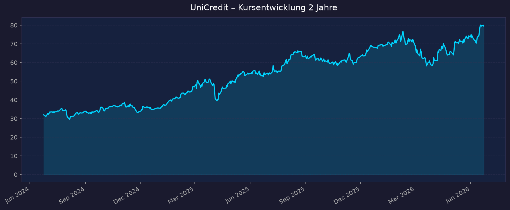
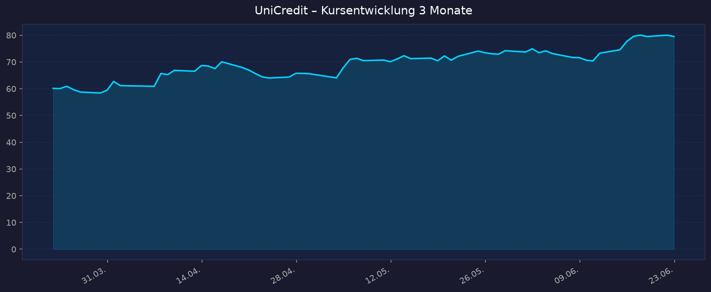

Investment-These: Bestes Momentum unter EU-Banken, mehrere 52-Wochen-Hochs, +25 % auf 12-Monats-Sicht. Treiber: massive Kapitalrückführung (≈50 Mrd. € 2026–2030) plus M&A-Fantasie (Commerzbank-Übernahme, Banco BPM). Hauptrisiko: Zins-/EZB-Sensitivität und politischer Widerstand bei M&A.
📈 1. Kursentwicklung
Aktueller Kurs: 79,52 EUR | Veränderung heute: nicht eindeutig verfügbar (Schlusskurs-Basis)
Chart – 2 Jahre

Chart – 3 Monate

| Zeitraum | Kurs Start | Kurs Ende | Veränderung |
|---|---|---|---|
| 2 Jahre | 31,99 EUR | 79,52 EUR | +148,6 % |
| 3 Monate | 60,14 EUR | 79,52 EUR | +32,2 % |
| 52-Wochen-Hoch | — | 80,95 EUR (10-Jahres-Hoch, Juni 2026) | — |
| 52-Wochen-Tief | — | 55,61 EUR | — |
Interaktiver Chart: TradingView UCG (Borsa Italiana)
Einordnung: Die Aktie notiert nur ~1,8 % unter dem 52-Wochen- und 10-Jahres-Hoch. Mit +148 % über 2 Jahre und +32 % allein im letzten Quartal zählt UniCredit zu den stärksten Werten im europäischen Bankensektor. Klares Aufwärtsmomentum, allerdings nahe Allzeit-relevanten Hochs (kurzfristig erhöhtes Rücksetzer-Risiko).
💹 2. KGV-Entwicklung (Kurs-Gewinn-Verhältnis)
Aktuelles KGV (trailing): 10,9 | Forward-KGV: 9,6
| Zeitraum | KGV | Einordnung |
|---|---|---|
| Aktuell (trailing) | 10,9 | leicht über historischem Bank-Schnitt, aber für die Qualität günstig |
| Forward (2026e) | 9,6 | günstig angesichts ≥20 % ROTE-Ziel |
| vor 12 Monaten | ~7–8 (geschätzt) | Re-Rating durch starke Ergebnisse |
| vor 24 Monaten | ~5–6 (geschätzt) | tiefe Bewertung 2024 |
Historische Quartals-KGV nicht granular verfügbar (Macrotrends/aktien.guide blockiert) — Werte vor 12/24 Monaten sind Näherungen aus Kurs-/EPS-Verlauf.
Bewertung: Trotz Kursverdopplung bleibt das KGV mit ~10–11 moderat, weil der Gewinn parallel kräftig gestiegen ist (FY25 Nettogewinn 10,58 Mrd. €, +13,6 %). Die Aktie ist kein klassischer „Value-Schnapper" mehr, aber bei ROTE ~19–20 % weiterhin nicht teuer.
💰 3. Bewertung: KBV (Banken-Kennzahl) & P/S
KBV (Kurs-Buchwert): 1,74 | P/S: 4,68
| Kennzahl | Wert | Einordnung |
|---|---|---|
| KBV (Price/Book) | 1,74 | Premium-Bewertung für eine EU-Bank (Sektorschnitt eher 0,8–1,2) |
| P/S | 4,68 | bei Banken nur eingeschränkt aussagekräftig |
| Dividendenrendite | ~3,9 % | plus erhebliche Buybacks |
| Marktkapitalisierung | ~119 Mrd. € | unter den größten EU-Banken |
Trend / Einordnung: Bei Banken ist das KBV die zentrale Kennzahl. Mit 1,74 wird UniCredit deutlich über Buchwert gehandelt — gerechtfertigt durch ein ROTE von 19,2 % (FY25), das weit über den Kapitalkosten liegt. Die Faustregel KBV ≈ ROTE/Kapitalkosten stützt eine Bewertung über 1. Das Re-Rating von ~0,5 (2022) auf 1,74 spiegelt die Transformation unter CEO Andrea Orcel.
📊 4. Handelsvolumen
| Zeitraum | Ø Tagesvolumen | Auffälligkeiten |
|---|---|---|
| Letzter Handelstag | ~2,12 Mio. Aktien | unter Durchschnitt |
| 3-Monats-Ø (yfinance avgVolume) | ~6,23 Mio. Aktien | — |
| Volumenspitzen | — | rund um Q1-Zahlen (Mai 2026) und Commerzbank-Tender-Meldungen (Juni 2026) |
Volumentrend: Erhöhte Handelsaktivität in Phasen der M&A-News (Commerzbank-Übernahmeangebot) und Quartalszahlen. Das aktuelle Tagesvolumen liegt unter dem 3-Monats-Schnitt — typisch für eine ruhigere Phase nahe dem Hoch.
🏦 5. Insider Trades
Detaillierte Insider-Transaktionsdaten für UCG.MI über öffentliche Quellen (Consob / GuruFocus) nicht granular verfügbar. Italienische Emittenten melden Directors'-Dealings an Consob; eine konsolidierte Liste mit Datum/Stückzahl/Wert war zum Datenstand nicht abrufbar.
Qualitativ: Keine auffälligen großvolumigen Insider-Verkäufe in der öffentlichen Berichterstattung. Das Management signalisiert über aggressive Aktienrückkäufe (Buybacks) und erhöhte Ausschüttungsziele Vertrauen in die Bewertung.
Status: nicht verfügbar (best effort).
🩳 6. Short-Positionen
Aktuelle Short-Quote: nicht verfügbar (best effort)
Consob veröffentlicht nur Netto-Short-Positionen ab 0,5 % des Kapitals. Zum Datenstand waren keine signifikanten offengelegten Netto-Short-Positionen gegen UniCredit in den durchsuchten Quellen sichtbar — ein Hinweis auf geringes Short-Interesse, was zum starken Momentum passt.
| Zeitraum | Short Interest | Veränderung |
|---|---|---|
| Aktuell | nicht verfügbar / vermutlich niedrig | — |
Einschätzung: Bei einer Aktie nahe Mehrjahreshoch mit positivem Newsflow ist niedriges Short-Interesse plausibel. Keine erkennbare „Short-Squeeze"-Sondersituation.
🗞️ 7. Aktuelle Nachrichten
| Datum | Quelle | Nachricht | Relevanz |
|---|---|---|---|
| 19.06.2026 | Bloomberg | UniCredit kontrolliert nach erster Andienungsfrist bis zu 42 % an Commerzbank | Hoch |
| 16.06.2026 | Bloomberg | Annahmequote der ersten Tender-Periode: 12,51 % der Aktien angedient; Angebot wird ab 20.06. für 2 Wochen wiedereröffnet | Hoch |
| 18.06.2026 | DER AKTIONÄR | Neues 10-Jahres-Hoch bei 80,53 EUR | Hoch |
| 02.06.2026 | Bloomberg | UniCredit-Angebot überschreitet 30 %-Schwelle; Direktbeteiligung steigt Richtung 34 % | Hoch |
| Juni 2026 | Il Sole 24 Ore | Deutsche Regierung: Wird Commerzbank-Anteil (~13 %) nicht verkaufen — Delisting/Squeeze-out praktisch blockiert | Hoch |
| Mai 2026 | UniCredit / Investing.com | Q1 2026 Rekordquartal: Nettogewinn 3,2 Mrd. € (+16 %), 21. Wachstumsquartal in Folge; Guidance angehoben auf ≥11 Mrd. € | Hoch |
| Mai 2026 | Goldesel / ad-hoc | Orcel setzt Fokus auf Ausschüttungen statt M&A; erhöhter Buyback | Mittel |
| 2026 | Banking Dive | Übernahme Banco BPM für 10,1 Mrd. € (italienischer Markt); „Golden Power"-Rechtsstreit beendet | Hoch |
| 2026 | BofA / JPMorgan / Barclays | Kursziele: BofA 92 €, JPMorgan 89 €, Barclays 82,40 € (Overweight), ODDO 76 € (Neutral) | Mittel |
| 03.02.2026 | FIRSTonline | Intesa Sanpaolo überholt BNP Paribas nach Marktkapitalisierung | Mittel |
Sentiment: Überwiegend positiv — Rekordergebnisse, angehobene Guidance, aggressive Kapitalrückführung und M&A-Fantasie. Gegengewicht: politischer Widerstand der deutschen Regierung gegen die Commerzbank-Übernahme begrenzt das Squeeze-out-Potenzial.
📋 8. Letzte 3 Quartalsberichte
Q1 2026 (Mai 2026) — „Unlimited off to a flying start"
| Kennzahl | Ist | Einordnung |
|---|---|---|
| Nettogewinn | 3,2 Mrd. € (+16 % YoY) | bestes Quartal der Firmengeschichte |
| CET1-Quote | 14,2 % (pro forma ~15 %) | solide über Ziel |
| Net Revenue | Wachstumsquartal Nr. 21 in Folge | — |
| Guidance | ≥11 Mrd. € Nettogewinn 2026 (angehoben) | — |
| Ausschüttung | erhöhte Buyback-Tranche angekündigt | — |
Kursreaktion: positiv, Kurs trieb in Richtung neuer Hochs.
Q4 2025 / FY2025 (Februar 2026)
| Kennzahl | Ist | Einordnung |
|---|---|---|
| Nettogewinn Q4 (bereinigt) | 1,83 Mrd. € (+17,2 %) | stated 2,17 Mrd. € (+10 %) |
| EPS Q4 | 1,22 € (+18,1 %) | — |
| Umsatz Q4 | 5,69 Mrd. € (−5,3 %) | Erträge rückläufig (Zinswende) |
| FY25 Nettogewinn | 10,58 Mrd. € (+13,6 %) | — |
| FY25 ROTE | 19,2 % | Spitzenwert im Sektor |
| FY25 Ausschüttung | 9,5 Mrd. € (DPS 3,15 €, +31 %; + 4,75 Mrd. € Buyback) | — |
| Guidance | FY26 ~11 Mrd. €, FY28 ~13 Mrd. €; ROTE >20 % (2026), 23 % (2028) | — |
Kursreaktion: Aktie legte nach den Zahlen zu (Rekordgewinn + erhöhte Mittelfristziele).
Q3 2025 / 9M2025 (Oktober 2025)
| Kennzahl | Ist | Einordnung |
|---|---|---|
| Nettogewinn | 2,6 Mrd. € (+4,7 % YoY) | — |
| EPS | 1,71 € (+8,6 %) | — |
| Net Revenue | 6,1 Mrd. € (+1,2 %) | — |
| Guidance | FY25-Nettogewinn ~10,5 Mrd. € bestätigt | — |
Kursreaktion: stabil/positiv, Guidance bestätigt.
Hinweis: EPS-/Umsatz-„Erwartung vs. Ist"-Vergleich (Konsens) war pro Quartal nicht durchgängig verfügbar; ausgewiesen sind die berichteten Ist-Werte.
🌍 9. Marktkontext & Wettbewerb
Markt / Branche: Europäischer Bankensektor (Eurozone). Das Umfeld 2026 ist geprägt von einer EZB, die die Leitzinsen im März 2026 unverändert ließ (Inflation ~2,6 % 2026e → 2,0 % 2027e). „Higher for longer" stützt die Zinsmargen, dämpft aber die Kreditnachfrage. Konsolidierung (M&A) ist das dominierende Branchenthema.
| Wettbewerber | Stärke | Schwäche |
|---|---|---|
| Intesa Sanpaolo | Größte ital. Bank (~133 Mrd. € MktCap), starkes Inlandsgeschäft, hohe Ausschüttung | starker Italien-Fokus, weniger M&A-Dynamik |
| Banco Santander | Größte EU-Bank (~255 Mrd. €), globale Diversifikation (LatAm) | EM-Währungsrisiken |
| BNP Paribas | Diversifiziertes Universalbank-Modell (~114 Mrd. €) | niedrigeres ROTE, geringere Bewertungsdynamik |
| Commerzbank | Übernahmeziel von UniCredit | politischer Schutz durch Bundesregierung |
Branchentrends:
- Konsolidierungswelle — grenzüberschreitende M&A (UniCredit/Commerzbank) und Inlands-Deals (UniCredit/Banco BPM).
- Rekord-Kapitalrückführung — EU-Banken schütten dank hoher Kapitalquoten Rekordsummen aus; UniCredit plant ~50 Mrd. € (2026–2030, ≈45 % der MktCap).
- Zinsnormalisierung — sinkende/seitwärts laufende Zinsen drücken den Zinsüberschuss; Fokus verlagert sich auf Provisions-/Gebührenerträge und Effizienz.
Marktposition: UniCredit ist unter den EU-Großbanken aktuell führend bei Profitabilität (ROTE 19,2 %) und Momentum. Das Re-Rating (KBV 1,74) hebt sie vom Sektor ab. Strategisch zweigleisig: organische Rendite plus aggressive M&A.
Risiken aus dem Marktumfeld:
- Zins-/EZB-Risiko: sinkende Zinsen reduzieren den Zinsüberschuss (Q4-Umsatz bereits −5,3 %).
- Politisches M&A-Risiko: Bundesregierung blockiert faktisch Commerzbank-Delisting/Squeeze-out; „Golden Power"-Themen in Italien.
- Bewertungsrisiko: Premium-KBV lässt wenig Puffer bei Enttäuschungen; Kurs nahe Mehrjahreshoch.
- Konjunktur-/Kreditrisiko: Eurozonen-Abschwung würde Risikovorsorge erhöhen.
📝 Gesamteinschätzung
Stärken:
- Rekordprofitabilität: ROTE 19,2 % (FY25), Ziel >20 % (2026) und 25 % (2030) — Spitze im Sektor.
- Massive Kapitalrückführung: ~50 Mrd. € über 2026–2030 (≈45 % der Marktkap.), Ausschüttungsquote 80 % des Gewinns ab 2026.
- Stärkstes Kurs-Momentum unter EU-Banken: +148 % (2J), nahe 10-Jahres-Hoch.
- M&A-Fantasie: Commerzbank (bis 42 % kontrollierbar) + Banco BPM (10,1 Mrd. €) als Wachstums-Hebel.
- Trotz Kursverdopplung moderates Forward-KGV (9,6).
Risiken:
- Politischer Widerstand der deutschen Regierung begrenzt den Commerzbank-Vollzug (Delisting blockiert).
- Zinssensitivität: rückläufige Erträge bei sinkenden EZB-Zinsen (Q4-Umsatz −5,3 %).
- Premium-KBV (1,74) — wenig Bewertungspuffer, Kurs nahe Hoch (kurzfristiges Rücksetzer-Risiko).
- M&A-Integrationsrisiko und Bindung von Kapital.
- Insider-/Short-Daten nicht transparent verfügbar.
Fazit: UniCredit ist 2026 die Profitabilitäts- und Momentum-Leaderin unter den EU-Banken, getragen von Rekordergebnissen, einer der höchsten Kapitalrückführungen der Branche und konkreter M&A-Fantasie. Die Bewertung (KBV 1,74, Forward-KGV 9,6) ist für die Qualität noch vertretbar, der Kurs notiert aber nahe Mehrjahreshoch und ist zins- sowie politiksensitiv. Solide Watchlist-Position mit Aufwärtspotenzial laut Analysten (Ø-Kursziel ~84–85 €), aber begrenztem kurzfristigem Bewertungspuffer.
🎯 Ranking-Einordnung
Bewertung nach 5 Kriterien (Punkte 1–10, gewichtet)
| Kriterium | Gewicht | Punkte (1–10) | Begründung |
|---|---|---|---|
| Momentum & Technik | 25 % | 9 | +148 % (2J), nahe 10-Jahres-Hoch, stärkste EU-Bank |
| Fundamentaldaten & Profitabilität | 25 % | 9 | ROTE 19,2 %, Rekordgewinn, ≥11 Mrd. € Guidance, KGV moderat |
| Kapitalrückführung & Bilanz | 20 % | 9 | ~50 Mrd. € Ausschüttung 2026–2030, CET1 ~15 %, 80 % Payout |
| Wachstum / M&A-Katalysator | 15 % | 7 | Commerzbank + BPM, aber politisch gebremst, Integrationsrisiko |
| Bewertung / Risikopuffer | 15 % | 5 | KBV 1,74 (Premium), Kurs nahe Hoch, zinssensitiv |
Gewichteter Gesamt-Score: (9×0,25)+(9×0,25)+(9×0,20)+(7×0,15)+(5×0,15) = 2,25+2,25+1,80+1,05+0,75 = 8,1 / 10
Szenarien 2031 (5-Jahres-Horizont, Basis 79,52 EUR)
| Szenario | Annahme | Kursziel 2031 | Potenzial |
|---|---|---|---|
| 🐻 Bär | Zinsverfall drückt Erträge, M&A scheitert/zerstört Wert, Re-Rating zurück auf KBV ~1,1 | ~60 EUR | −25 % |
| 📊 Base | Ziele erreicht (ROTE >20 %, ~13 Mrd. € Gewinn 2028), stetige Ausschüttung, KBV hält ~1,6 | ~110 EUR | +38 % |
| 🚀 Bull | Commerzbank-/BPM-Integration gelingt, ROTE 25 %, Re-Rating + Gewinnwachstum | ~150 EUR | +89 % |
Hinweis: Kursziele ohne reinvestierte Dividenden/Buybacks; die hohe Ausschüttung (~8–10 %/Jahr Total Yield) erhöht die Gesamtrendite in allen Szenarien zusätzlich.
Datenquellen: Yahoo Finance (yfinance) · Bloomberg · Reuters/Il Sole 24 Ore · UniCredit IR · Investing.com · ad-hoc-news · DER AKTIONÄR · Banking Dive · S&P Global · Consob (Short/Insider) · aktien.guide Verwandte Notiz: 00_Momentum-Aktien USA-EU-Asien – 5-Jahres-Shortlist 2026-06-23
⚠️ Disclaimer: Keine Anlageberatung. Rein informative Auswertung öffentlich verfügbarer Daten zum Stand 2026-06-23. Kurse in EUR. Investitionsentscheidungen erfolgen eigenverantwortlich.